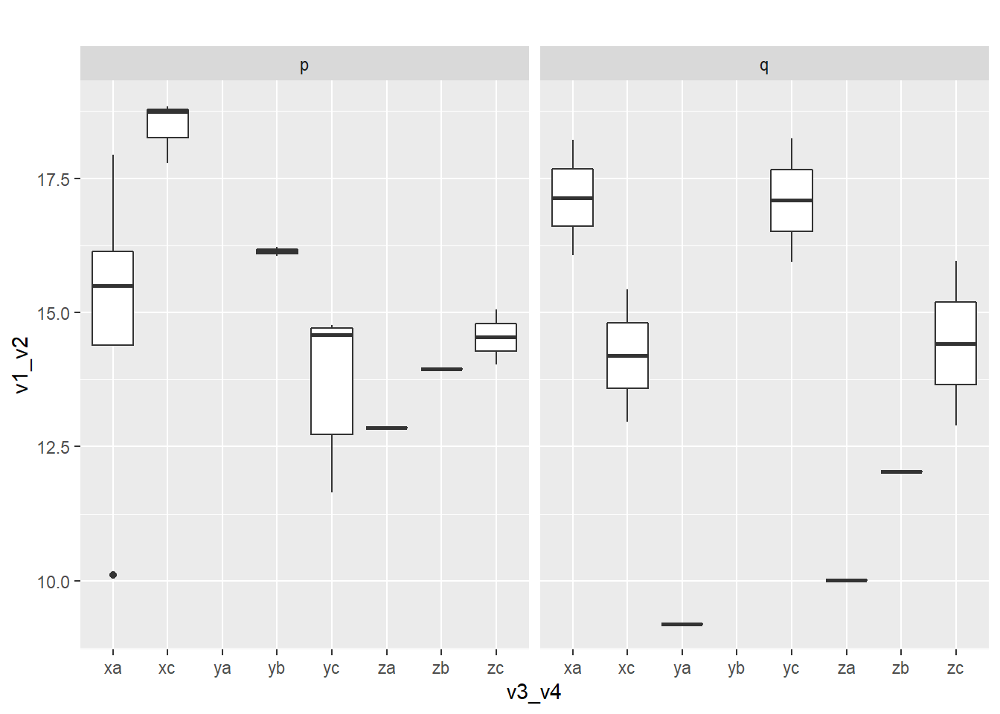

Translation Syntax Example
Package Deposit
## install.packages("descr")
library(descr) # freq()
## install.packages("ggplot2")
library(ggplot2)Data Management
Data Management
create a data set with categorical and numeric variables and save as .csv
# numerical variable
v1 <- runif(100, 0, 7.5) # generate 10 random numbers between 0 and 7.5
v2 <- runif(100, 7.5, 15)
# categorical variable
v3 <- sample(c("x", "y", "z", "n"), size = 100, replace = T) # randomly sample 10 observations out of x, y, z
v4 <- sample(c("a", "b", "c", "n"), size = 100, replace = T)
v5 <- sample(c("p", "q", "n"), size = 100, replace = T)
# combine variables into a dataframe
ie.df <- data.frame(v1, v2, v3, v4, v5)
# save as csv
write.table(ie.df, file = "C:\\Users\\tonyr\\Downloads\\QAC201Z_Material\\example.csv", sep = ",", row.names = F)sort the data
sort by ascending v1
ie.df <- ie.df[order(ie.df$v1, decreasing = F), ]select responses
subset observations with x
ie.x <- ie.df[ie.df$v3 == "x", ]subset observations with x and a
ie.xa <- ie.df[ie.df$v3 == "x" & ie.df$v4 == "a", ]Deal with missing data
label missing data as NA
- v3, v4, v5 “n” codes for missing data
ie.df$v3[ie.df$v3 == "n"] <- NA
ie.df$v4[ie.df$v4 == "n"] <- NA
ie.df$v5[ie.df$v5 == "n"] <- NAsubset observations without NA values in any variables
na.omit(ie.df)## v1 v2 v3 v4 v5
## 16 0.03824091 12.818768 z a p
## 79 0.10057403 12.034096 y c p
## 47 0.11818768 11.523254 y c p
## 86 0.56572332 14.196330 y c p
## 34 0.60124074 11.428727 z b q
## 24 0.83015644 12.137315 x c q
## 30 1.00841862 8.191394 y a q
## 87 1.13872346 13.535521 y c p
## 18 1.30713105 12.717959 z c p
## 66 1.30718242 8.698806 z a q
## 52 1.40784486 11.490285 z c q
## 78 1.93289702 8.171765 x a p
## 81 1.98348732 11.966748 z b p
## 5 2.70192799 12.798885 x a p
## 82 2.84161700 11.545714 x a p
## 65 3.16250025 12.778789 y c q
## 13 3.38393249 14.829960 x a q
## 88 3.38719910 11.112012 y c p
## 28 3.75812728 11.292035 z c p
## 69 3.78419340 12.349428 x a p
## 62 3.92558577 12.121140 y b p
## 17 3.96974478 14.765852 x c p
## 59 4.91358414 13.925249 x c p
## 27 5.08675260 12.701493 x c p
## 41 5.17900783 10.248461 x c q
## 21 5.50434763 10.445365 z c q
## 89 5.68193433 12.554428 y c q
## 57 6.82947768 9.391668 y b p
## 83 6.99791419 10.939302 x a p
## 76 7.09142986 8.974521 x a q
## 75 7.20877778 7.506354 y c psubset observations without NA values in selected variable
ie.df[!is.na(ie.df$v3),]## v1 v2 v3 v4 v5
## 16 0.03824091 12.818768 z a p
## 6 0.05416995 14.938923 x a <NA>
## 79 0.10057403 12.034096 y c p
## 92 0.10595128 9.706844 z b <NA>
## 47 0.11818768 11.523254 y c p
## 63 0.11986848 10.246560 y <NA> q
## 95 0.24099387 9.798847 y <NA> p
## 86 0.56572332 14.196330 y c p
## 34 0.60124074 11.428727 z b q
## 38 0.66126963 14.654319 z c <NA>
## 61 0.66610551 7.584592 y b <NA>
## 50 0.82037566 13.812858 y c <NA>
## 24 0.83015644 12.137315 x c q
## 2 0.96362584 12.441038 z c <NA>
## 71 0.97542503 9.491562 z <NA> p
## 30 1.00841862 8.191394 y a q
## 87 1.13872346 13.535521 y c p
## 55 1.18317397 14.273771 z a <NA>
## 48 1.26047661 12.728673 x b <NA>
## 18 1.30713105 12.717959 z c p
## 66 1.30718242 8.698806 z a q
## 52 1.40784486 11.490285 z c q
## 1 1.71602598 13.988795 z b <NA>
## 85 1.75207601 9.181153 x a <NA>
## 78 1.93289702 8.171765 x a p
## 81 1.98348732 11.966748 z b p
## 44 1.99180458 7.624074 z <NA> p
## 84 2.08034426 14.879007 x a <NA>
## 51 2.54540391 12.259910 x b <NA>
## 22 2.64662058 7.786692 y b <NA>
## 5 2.70192799 12.798885 x a p
## 82 2.84161700 11.545714 x a p
## 94 2.88990795 12.542295 z <NA> p
## 23 2.94229070 8.150538 x c <NA>
## 65 3.16250025 12.778789 y c q
## 98 3.33055125 13.244450 x <NA> p
## 37 3.36289857 10.643452 x <NA> <NA>
## 13 3.38393249 14.829960 x a q
## 88 3.38719910 11.112012 y c p
## 68 3.52768989 13.147220 y <NA> q
## 8 3.73699002 12.007553 y a <NA>
## 28 3.75812728 11.292035 z c p
## 69 3.78419340 12.349428 x a p
## 62 3.92558577 12.121140 y b p
## 17 3.96974478 14.765852 x c p
## 72 4.12108102 8.721394 y <NA> p
## 40 4.18708930 9.097950 y <NA> q
## 26 4.41631143 10.955657 x <NA> <NA>
## 14 4.50755959 8.764885 y b <NA>
## 90 4.54630677 14.575189 y b <NA>
## 53 4.55845117 14.382516 z c <NA>
## 29 4.64520913 12.750798 y c <NA>
## 100 4.77127464 10.218766 z <NA> <NA>
## 59 4.91358414 13.925249 x c p
## 32 5.06956696 14.430881 y <NA> <NA>
## 27 5.08675260 12.701493 x c p
## 41 5.17900783 10.248461 x c q
## 93 5.19491750 10.877626 y <NA> p
## 21 5.50434763 10.445365 z c q
## 89 5.68193433 12.554428 y c q
## 46 5.80314214 10.199750 x <NA> <NA>
## 67 5.90992828 9.363512 z c <NA>
## 12 6.10092004 9.232884 y c <NA>
## 70 6.12045017 9.078908 y a <NA>
## 7 6.54407080 10.789933 x c <NA>
## 9 6.70453237 14.289348 z c <NA>
## 60 6.75617517 13.740176 z <NA> p
## 57 6.82947768 9.391668 y b p
## 83 6.99791419 10.939302 x a p
## 76 7.09142986 8.974521 x a q
## 75 7.20877778 7.506354 y c pcreate secondary variables
bin v1 into 4 sections
ie.df$v6[ie.df$v1 < 2] <- 1
ie.df$v6[ie.df$v1 >=2 & ie.df$v1 < 4] <- 2
ie.df$v6[ie.df$v1 >= 4 & ie.df$v1 < 6] <- 3
ie.df$v6[ie.df$v1 >= 6 & ie.df$v1 < 8] <- 4combine v3 and v4 into v7
ie.df$v7[is.na(ie.df$v3) | is.na(ie.df$v4)] <- NA
ie.df$v7[ie.df$v3 == "x" & ie.df$v4 == "a"] <- "xa"
ie.df$v7[ie.df$v3 == "x" & ie.df$v4 == "b"] <- "xb"
ie.df$v7[ie.df$v3 == "x" & ie.df$v4 == "c"] <- "xc"
ie.df$v7[ie.df$v3 == "y" & ie.df$v4 == "a"] <- "ya"
ie.df$v7[ie.df$v3 == "y" & ie.df$v4 == "b"] <- "yb"
ie.df$v7[ie.df$v3 == "y" & ie.df$v4 == "c"] <- "yc"
ie.df$v7[ie.df$v3 == "z" & ie.df$v4 == "a"] <- "za"
ie.df$v7[ie.df$v3 == "z" & ie.df$v4 == "b"] <- "zb"
ie.df$v7[ie.df$v3 == "z" & ie.df$v4 == "c"] <- "zc"sum up v1 and v2 into v7
ie.df$v8 <- ie.df$v1 + ie.df$v2rename variable
names(ie.df)[names(ie.df) == "v8"] <- "v1_v2"
names(ie.df)[names(ie.df) == "v7"] <- "v3_v4"
names(ie.df)[names(ie.df) == "v6"] <- "v1_level"label variable values
levels(ie.df$v1_level) <- c("lowest", "low", "high", "highest")Univariate Analysis
Univariate Analysis
Categorical Variables
frequency
# frequency
#library(descr)
freq(as.ordered(ie.df$v3_v4))
## as.ordered(ie.df$v3_v4)
## Frequency Percent Valid Percent Cum Percent
## xa 10 10 18.182 18.18
## xb 2 2 3.636 21.82
## xc 7 7 12.727 34.55
## ya 3 3 5.455 40.00
## yb 6 6 10.909 50.91
## yc 11 11 20.000 70.91
## za 3 3 5.455 76.36
## zb 4 4 7.273 83.64
## zc 9 9 16.364 100.00
## NA's 45 45
## Total 100 100 100.000frequency bar plot w. ggplot
#library(ggplot2)
ggplot(data = na.omit(ie.df)) + # na.omit() removes any observations containing NA
geom_bar(aes(x = v3_v4)) +
ggtitle("v3_v4 frequency barplot")
Numeric Variables
mean
mean(ie.df$v1_v2, na.rm = T)## [1] 14.80859standard deviation
sd(ie.df$v1_v2, na.rm = T)## [1] 2.84115histogram w. ggplot
ggplot(data = ie.df)+
geom_histogram(aes(x = v1_v2))+
ggtitle("v1_v2 histogram")
Bivariate Analysis
Bivariate Analysis
Categorical-Categorical (crosstabs)
crosstabs
table(ie.df$v3, ie.df$v4)##
## a b c
## x 10 2 7
## y 3 6 11
## z 3 4 9column proportions
prop.table(table(ie.df$v3, ie.df$v4), 2) # col proportions##
## a b c
## x 0.6250000 0.1666667 0.2592593
## y 0.1875000 0.5000000 0.4074074
## z 0.1875000 0.3333333 0.3333333row proportions
prop.table(table(ie.df$v3, ie.df$v4), 1) # row proportions##
## a b c
## x 0.5263158 0.1052632 0.3684211
## y 0.1500000 0.3000000 0.5500000
## z 0.1875000 0.2500000 0.5625000cell proportions
prop.table(table(ie.df$v3, ie.df$v4)) # cell proportions##
## a b c
## x 0.18181818 0.03636364 0.12727273
## y 0.05454545 0.10909091 0.20000000
## z 0.05454545 0.07272727 0.16363636Graphs
for binary categorical response
# for binary categorical response
graph_data <- data.frame(v3 = na.omit(ie.df)$v3,
v5 = ifelse(na.omit(ie.df)$v5 == "p", 0, 1))
ggplot(data = graph_data)+
stat_summary(aes(x=v3, y = v5), fun = "mean", geom = "bar")+
ylab("poriton of responses that are '1 (aka. q)'")+
ggtitle("percentage of q within v3 groups")
for multi-level categorical responses
# stacked barplot for mutli-level categorical responses
graph_data <- data.frame(v4 = c(rep("a", 3), rep("b", 3), rep("c", 3)),
v3 = rep(c("x", "y", "z"), 3),
value = as.numeric(table(ie.df$v3, ie.df$v4)))
ggplot(data = graph_data, aes(fill = v4, x = v3, y = value))+
geom_bar(position = "stack", stat = "identity")+
ylab("number of observations")+
ggtitle("number of subjects at each response level within each group")
Numeric-Categorical
stats by group
Mean
by(ie.df$v1, ie.df$v3_v4, mean, na.rm = T)## ie.df$v3_v4: xa
## [1] 3.26205
## ---------------------------------------------------------
## ie.df$v3_v4: xb
## [1] 1.90294
## ---------------------------------------------------------
## ie.df$v3_v4: xc
## [1] 4.209372
## ---------------------------------------------------------
## ie.df$v3_v4: ya
## [1] 3.621953
## ---------------------------------------------------------
## ie.df$v3_v4: yb
## [1] 3.853609
## ---------------------------------------------------------
## ie.df$v3_v4: yc
## [1] 2.993648
## ---------------------------------------------------------
## ie.df$v3_v4: za
## [1] 0.8428658
## ---------------------------------------------------------
## ie.df$v3_v4: zb
## [1] 1.101676
## ---------------------------------------------------------
## ie.df$v3_v4: zc
## [1] 3.419473standard deviation
by(ie.df$v1, ie.df$v3_v4, sd, na.rm = T)## ie.df$v3_v4: xa
## [1] 2.239355
## ---------------------------------------------------------
## ie.df$v3_v4: xb
## [1] 0.9085808
## ---------------------------------------------------------
## ie.df$v3_v4: xc
## [1] 1.859155
## ---------------------------------------------------------
## ie.df$v3_v4: ya
## [1] 2.557957
## ---------------------------------------------------------
## ie.df$v3_v4: yb
## [1] 2.068113
## ---------------------------------------------------------
## ie.df$v3_v4: yc
## [1] 2.612608
## ---------------------------------------------------------
## ie.df$v3_v4: za
## [1] 0.6995787
## ---------------------------------------------------------
## ie.df$v3_v4: zb
## [1] 0.8938531
## ---------------------------------------------------------
## ie.df$v3_v4: zc
## [1] 2.369076number of observations
by(ie.df$v1, ie.df$v3_v4, length)## ie.df$v3_v4: xa
## [1] 10
## ---------------------------------------------------------
## ie.df$v3_v4: xb
## [1] 2
## ---------------------------------------------------------
## ie.df$v3_v4: xc
## [1] 7
## ---------------------------------------------------------
## ie.df$v3_v4: ya
## [1] 3
## ---------------------------------------------------------
## ie.df$v3_v4: yb
## [1] 6
## ---------------------------------------------------------
## ie.df$v3_v4: yc
## [1] 11
## ---------------------------------------------------------
## ie.df$v3_v4: za
## [1] 3
## ---------------------------------------------------------
## ie.df$v3_v4: zb
## [1] 4
## ---------------------------------------------------------
## ie.df$v3_v4: zc
## [1] 9Graph
barplot
ggplot(data = na.omit(ie.df))+
stat_summary(aes(x = v3_v4, y = v1), fun = "mean", geom = "bar")+
ggtitle("mean barplot")
boxplot
ggplot(data = na.omit(ie.df))+
geom_boxplot(aes(x = v3_v4, y = v1))+
ggtitle("boxplot")
Numeric-Numeric
ggplot(data = na.omit(ie.df), aes(x = v1, y = v1_v2))+
geom_point()+
geom_smooth(method = "lm")+
ggtitle("Correlation between v1_v2 and v1")
Multivariate Analysis (Bivariate by subpopulation)
Multivariate Analysis
Categorical-Categorical
C \(\Rightarrow\) C
binary categorical response
graph_data <- data.frame(v3 = na.omit(ie.df)$v3,
v5 = ifelse(na.omit(ie.df)$v5 == "p", 0, 1),
v4 = na.omit(ie.df)$v4)
ggplot(data = graph_data)+
stat_summary(aes(x=v3, y = v5), fun = "mean", geom = "bar")+
facet_grid(.~v4)+
ylab("poriton of responses that are '1 (aka. q)'")+
ggtitle("percentage of q within v3 groups")
multi-level categorical response
graph_data <- data.frame(v4 = rep(c(rep("a", 3), rep("b", 3), rep("c", 3)), 2),
v3 = rep(c("x", "y", "z"), 6),
value = c(as.numeric(table(ie.df[ie.df$v5 == "p",]$v3, ie.df[ie.df$v5 == "p",]$v4)),
as.numeric(table(ie.df[ie.df$v5 == "q",]$v3, ie.df[ie.df$v5 == "q",]$v4))),
v5 = c(rep("p", 9), rep("q", 9)))
ggplot(data = graph_data)+
geom_bar(position = "stack", aes(fill = v4, x = v3, y = value), stat = "identity")+
facet_grid(.~v5)+
ylab("number of observations")+
ggtitle("number of subjects at each response level within each group")
Numeric-Categorical
C \(\Rightarrow\) N
mean by group
# mean by group
ftable(by(ie.df$v1_v2, list(ie.df$v3_v4, ie.df$v5), mean, na.rm = T))## p q
##
## xa 14.812729 17.139922
## xb NA NA
## xc 18.454225 14.197470
## ya NA 9.199813
## yb 16.133936 NA
## yc 13.737792 17.088826
## za 12.857008 10.005988
## zb 13.950236 12.029968
## zc 14.537626 14.423921boxplot
ggplot(data = na.omit(ie.df)) +
geom_boxplot(aes(x = v3_v4, y = v1_v2))+
facet_grid(.~v5)+
ggtitle("")
Numeric-Numeric
N \(\Rightarrow\) N
ggplot(data = na.omit(ie.df), aes(x = v1, y = v1_v2))+
geom_point()+
geom_smooth(method = "lm")+
facet_grid(.~v5)
Hypothesis Testing
Hypothesis Testing
Categorical-Categorical (\(\chi^2\))
\(\chi^2\) Test (C \(\Rightarrow\) C)
Bivariate
chi-square
# chisquare
chisq.test(na.omit(ie.df)$v4, na.omit(ie.df)$v3)##
## Pearson's Chi-squared test
##
## data: na.omit(ie.df)$v4 and na.omit(ie.df)$v3
## X-squared = 8.239, df = 4, p-value = 0.0832chi-square cell counts
chisq.test(na.omit(ie.df)$v4, na.omit(ie.df)$v3)$observed## na.omit(ie.df)$v3
## na.omit(ie.df)$v4 x y z
## a 7 1 2
## b 0 2 2
## c 5 8 4posthoc (for more than two levels)
source("https://raw.githubusercontent.com/PassionDrivenStatistics/R/master/ChiSquarePostHoc.R")
chisq.post.hoc(chisq.test(na.omit(ie.df)$v4, na.omit(ie.df)$v3)$observed,
popsInRows = F,
control = "bonferroni")## Adjusted p-values used the bonferroni method.## comparison raw.p adj.p
## 1 x vs. y 0.0247 0.0740
## 2 x vs. z 0.1698 0.5094
## 3 y vs. z 0.5389 1.0000# Pearson Residuals
chisq.test(na.omit(ie.df)$v4, na.omit(ie.df)$v3)$residuals## na.omit(ie.df)$v3
## na.omit(ie.df)$v4 x y z
## a 1.5903777 -1.3528508 -0.3614487
## b -1.2443420 0.4873773 0.9525010
## c -0.6161694 0.8011765 -0.1848123Multivariate
by(na.omit(ie.df), na.omit(ie.df)$v5, function(x) list(chisq.test(x$v4, x$v3),
chisq.test(x$v4, x$v3)$observed,
prop.table(chisq.test(x$v4, x$v3)$observed, 2)))## na.omit(ie.df)$v5: p
## [[1]]
##
## Pearson's Chi-squared test
##
## data: x$v4 and x$v3
## X-squared = 8.2955, df = 4, p-value = 0.08134
##
##
## [[2]]
## x$v3
## x$v4 x y z
## a 5 0 1
## b 0 2 1
## c 3 6 2
##
## [[3]]
## x$v3
## x$v4 x y z
## a 0.625 0.000 0.250
## b 0.000 0.250 0.250
## c 0.375 0.750 0.500
##
## ---------------------------------------------------------
## na.omit(ie.df)$v5: q
## [[1]]
##
## Pearson's Chi-squared test
##
## data: x$v4 and x$v3
## X-squared = 2.2153, df = 4, p-value = 0.6962
##
##
## [[2]]
## x$v3
## x$v4 x y z
## a 2 1 1
## b 0 0 1
## c 2 2 2
##
## [[3]]
## x$v3
## x$v4 x y z
## a 0.5000000 0.3333333 0.2500000
## b 0.0000000 0.0000000 0.2500000
## c 0.5000000 0.6666667 0.5000000Numeric-Categorical (ANOVA)
ANOVA Test (C \(\Rightarrow\) N)
Bivariate
ANOVA
summary(aov(v1_v2 ~ v3_v4, data = na.omit(ie.df)))## Df Sum Sq Mean Sq F value Pr(>F)
## v3_v4 7 87.12 12.446 2.583 0.0404 *
## Residuals 23 110.83 4.819
## ---
## Signif. codes: 0 '***' 0.001 '**' 0.01 '*' 0.05 '.' 0.1 ' ' 1posthoc (for more than two levels)
TukeyHSD(aov(v1_v2 ~ v3_v4, data = na.omit(ie.df)))## Tukey multiple comparisons of means
## 95% family-wise confidence level
##
## Fit: aov(formula = v1_v2 ~ v3_v4, data = na.omit(ie.df))
##
## $v3_v4
## diff lwr upr p adj
## xc-xa 1.27388220 -2.999581 5.5473454 0.9712099
## ya-xa -6.27782810 -14.080069 1.5244126 0.1804994
## yb-xa 0.65629462 -5.195386 6.5079752 0.9999357
## yc-xa -0.90209048 -4.679334 2.8751531 0.9917898
## za-xa -4.04614279 -9.897823 1.8055377 0.3356208
## zb-xa -2.48753950 -8.339220 3.3641410 0.8420761
## zc-xa -0.99686743 -5.571337 3.5776017 0.9952588
## ya-xc -7.55171030 -15.546628 0.4432073 0.0735362
## yb-xc -0.61758759 -6.723807 5.4886316 0.9999681
## yc-xc -2.17597268 -6.336660 1.9847144 0.6638156
## za-xc -5.32002499 -11.426244 0.7861942 0.1195240
## zb-xc -3.76142170 -9.867641 2.3447975 0.4740869
## zc-xc -2.27074963 -7.166617 2.6251176 0.7776337
## yb-ya 6.93412271 -2.004467 15.8727124 0.2136341
## yc-ya 5.37573762 -2.365308 13.1167833 0.3306472
## za-ya 2.23168531 -6.706904 11.1702750 0.9893477
## zb-ya 3.79028860 -5.148301 12.7288783 0.8436968
## zc-ya 5.28096067 -2.878818 13.4407393 0.4140246
## yc-yb -1.55838509 -7.328220 4.2114497 0.9832858
## za-yb -4.70243740 -12.000765 2.5958905 0.4194167
## zb-yb -3.14383411 -10.442162 4.1544938 0.8332916
## zc-yb -1.65316204 -7.973699 4.6673753 0.9860716
## za-yc -3.14405231 -8.913887 2.6257825 0.6190157
## zb-yc -1.58544902 -7.355284 4.1843858 0.9815886
## zc-yc -0.09477695 -4.564072 4.3745179 1.0000000
## zb-za 1.55860329 -5.739725 8.8569312 0.9958086
## zc-za 3.04927536 -3.271262 9.3698127 0.7433961
## zc-zb 1.49067207 -4.829865 7.8112094 0.9923774Multivariate
by(na.omit(ie.df), na.omit(ie.df)$v5, function(x) list(aov(v1_v2 ~ v3_v4, data = x),
summary(aov(v1_v2 ~ v3_v4, data = x)),
TukeyHSD(aov(v1_v2 ~ v3_v4, data = x))))## na.omit(ie.df)$v5: p
## [[1]]
## Call:
## aov(formula = v1_v2 ~ v3_v4, data = x)
##
## Terms:
## v3_v4 Residuals
## Sum of Squares 54.2230 45.9644
## Deg. of Freedom 6 13
##
## Residual standard error: 1.880352
## Estimated effects may be unbalanced
##
## [[2]]
## Df Sum Sq Mean Sq F value Pr(>F)
## v3_v4 6 54.22 9.037 2.556 0.0736 .
## Residuals 13 45.96 3.536
## ---
## Signif. codes: 0 '***' 0.001 '**' 0.01 '*' 0.05 '.' 0.1 ' ' 1
##
## [[3]]
## Tukey multiple comparisons of means
## 95% family-wise confidence level
##
## Fit: aov(formula = v1_v2 ~ v3_v4, data = x)
##
## $v3_v4
## diff lwr upr p adj
## xc-xa 3.6414965 -1.101132 8.384125 0.1871599
## yb-xa 1.3212070 -4.112156 6.754570 0.9756620
## yc-xa -1.0749364 -5.007316 2.857443 0.9577186
## za-xa -1.9557204 -9.069663 5.158222 0.9566031
## zb-xa -0.8624931 -7.976435 6.251449 0.9994097
## zc-xa -0.2751028 -5.708466 5.158260 0.9999964
## yb-xc -2.3202895 -8.248575 3.607996 0.8165369
## yc-xc -4.7164329 -9.308463 -0.124403 0.0425488
## za-xc -5.5972168 -13.095970 1.901537 0.2094156
## zb-xc -4.5039896 -12.002743 2.994764 0.4188142
## zc-xc -3.9165993 -9.844884 2.011686 0.3203214
## yc-yb -2.3961434 -7.698563 2.906276 0.7071022
## za-yb -3.2769273 -11.230556 4.676702 0.7812597
## zb-yb -2.1837000 -10.137329 5.769929 0.9568624
## zc-yb -1.5963097 -8.090421 4.897801 0.9743564
## za-yc -0.8807839 -7.895225 6.133658 0.9992799
## zb-yc 0.2124434 -6.801998 7.226885 0.9999998
## zc-yc 0.7998337 -4.502586 6.102253 0.9979916
## zb-za 1.0932273 -8.090833 10.277287 0.9994682
## zc-za 1.6806176 -6.273012 9.634247 0.9879011
## zc-zb 0.5873903 -7.366239 8.541019 0.9999666
##
##
## ---------------------------------------------------------
## na.omit(ie.df)$v5: q
## [[1]]
## Call:
## aov(formula = v1_v2 ~ v3_v4, data = x)
##
## Terms:
## v3_v4 Residuals
## Sum of Squares 81.32860 12.62238
## Deg. of Freedom 6 4
##
## Residual standard error: 1.776399
## Estimated effects may be unbalanced
##
## [[2]]
## Df Sum Sq Mean Sq F value Pr(>F)
## v3_v4 6 81.33 13.555 4.295 0.0899 .
## Residuals 4 12.62 3.156
## ---
## Signif. codes: 0 '***' 0.001 '**' 0.01 '*' 0.05 '.' 0.1 ' ' 1
##
## [[3]]
## Tukey multiple comparisons of means
## 95% family-wise confidence level
##
## Fit: aov(formula = v1_v2 ~ v3_v4, data = x)
##
## $v3_v4
## diff lwr upr p adj
## xc-xa -2.94245157 -11.801193 5.916290 0.6686233
## ya-xa -7.94010896 -18.789807 2.909589 0.1328355
## yc-xa -0.05109638 -8.909838 8.807645 1.0000000
## za-xa -7.13393373 -17.983632 3.715764 0.1791371
## zb-xa -5.10995443 -15.959652 5.739744 0.3908737
## zc-xa -2.71600059 -11.574742 6.142741 0.7265765
## ya-xc -4.99765739 -15.847355 5.852041 0.4080143
## yc-xc 2.89135519 -5.967386 11.750097 0.6817062
## za-xc -4.19148216 -15.041180 6.658216 0.5494084
## zb-xc -2.16750286 -13.017201 8.682195 0.9311090
## zc-xc 0.22645098 -8.632290 9.085192 0.9999989
## yc-ya 7.88901258 -2.960685 18.738711 0.1353321
## za-ya 0.80617523 -11.721977 13.334327 0.9997621
## zb-ya 2.83015453 -9.697998 15.358307 0.8914841
## zc-ya 5.22410837 -5.625590 16.073806 0.3741063
## za-yc -7.08283735 -17.932535 3.766861 0.1826291
## zb-yc -5.05885805 -15.908556 5.790840 0.3985932
## zc-yc -2.66490421 -11.523646 6.193837 0.7395586
## zb-za 2.02397930 -10.504173 14.552131 0.9715425
## zc-za 4.41793314 -6.431765 15.267631 0.5065987
## zc-zb 2.39395384 -8.455744 13.243652 0.9001806Numeric-Numeric (Pearson Correlation)
Pearson Correlation (N \(\Rightarrow\) N)
Bivariate
cor.test(na.omit(ie.df)$v1_v2, na.omit(ie.df)$v1)##
## Pearson's product-moment correlation
##
## data: na.omit(ie.df)$v1_v2 and na.omit(ie.df)$v1
## t = 5.1822, df = 29, p-value = 1.529e-05
## alternative hypothesis: true correlation is not equal to 0
## 95 percent confidence interval:
## 0.4495008 0.8410852
## sample estimates:
## cor
## 0.693399Multivariate
by(na.omit(ie.df), na.omit(ie.df)$v5, function(x) cor.test(x$v1_v2, x$v1))## na.omit(ie.df)$v5: p
##
## Pearson's product-moment correlation
##
## data: x$v1_v2 and x$v1
## t = 3.8627, df = 18, p-value = 0.00114
## alternative hypothesis: true correlation is not equal to 0
## 95 percent confidence interval:
## 0.3285915 0.8596418
## sample estimates:
## cor
## 0.6732203
##
## ---------------------------------------------------------
## na.omit(ie.df)$v5: q
##
## Pearson's product-moment correlation
##
## data: x$v1_v2 and x$v1
## t = 3.4789, df = 9, p-value = 0.00695
## alternative hypothesis: true correlation is not equal to 0
## 95 percent confidence interval:
## 0.2884961 0.9332277
## sample estimates:
## cor
## 0.7573099Regression
Regression
linear regression (numeric response)
Linear
simple
summary(lm(v1_v2 ~ v1, data = na.omit(ie.df)))##
## Call:
## lm(formula = v1_v2 ~ v1, data = na.omit(ie.df))
##
## Residuals:
## Min 1Q Median 3Q Max
## -3.8528 -0.7066 0.0551 1.1549 3.3532
##
## Coefficients:
## Estimate Std. Error t value Pr(>|t|)
## (Intercept) 12.2593 0.5861 20.918 < 2e-16 ***
## v1 0.7867 0.1518 5.182 1.53e-05 ***
## ---
## Signif. codes: 0 '***' 0.001 '**' 0.01 '*' 0.05 '.' 0.1 ' ' 1
##
## Residual standard error: 1.883 on 29 degrees of freedom
## Multiple R-squared: 0.4808, Adjusted R-squared: 0.4629
## F-statistic: 26.86 on 1 and 29 DF, p-value: 1.529e-05multiple
summary(lm(v1_v2 ~ v1 + factor(v5), data = na.omit(ie.df)))##
## Call:
## lm(formula = v1_v2 ~ v1 + factor(v5), data = na.omit(ie.df))
##
## Residuals:
## Min 1Q Median 3Q Max
## -3.9512 -0.5898 -0.1158 1.0408 3.7988
##
## Coefficients:
## Estimate Std. Error t value Pr(>|t|)
## (Intercept) 12.5305 0.6321 19.823 < 2e-16 ***
## v1 0.7892 0.1512 5.220 1.52e-05 ***
## factor(v5)q -0.7859 0.7038 -1.117 0.274
## ---
## Signif. codes: 0 '***' 0.001 '**' 0.01 '*' 0.05 '.' 0.1 ' ' 1
##
## Residual standard error: 1.875 on 28 degrees of freedom
## Multiple R-squared: 0.5029, Adjusted R-squared: 0.4674
## F-statistic: 14.17 on 2 and 28 DF, p-value: 5.62e-05multiple w. interaction terms
summary(lm(v1_v2 ~ v1 + factor(v5) + v1*factor(v5), data = na.omit(ie.df)))##
## Call:
## lm(formula = v1_v2 ~ v1 + factor(v5) + v1 * factor(v5), data = na.omit(ie.df))
##
## Residuals:
## Min 1Q Median 3Q Max
## -4.0860 -0.8134 0.2578 1.0367 3.7603
##
## Coefficients:
## Estimate Std. Error t value Pr(>|t|)
## (Intercept) 12.8829 0.7228 17.824 < 2e-16 ***
## v1 0.6765 0.1882 3.595 0.00128 **
## factor(v5)q -1.7931 1.2247 -1.464 0.15471
## v1:factor(v5)q 0.3175 0.3160 1.005 0.32390
## ---
## Signif. codes: 0 '***' 0.001 '**' 0.01 '*' 0.05 '.' 0.1 ' ' 1
##
## Residual standard error: 1.874 on 27 degrees of freedom
## Multiple R-squared: 0.5209, Adjusted R-squared: 0.4676
## F-statistic: 9.784 on 3 and 27 DF, p-value: 0.0001539logistic regression (categorical response)
Logistic
simple
summary(glm(factor(v5) ~ v1, data = na.omit(ie.df), family = "binomial")) # p-value##
## Call:
## glm(formula = factor(v5) ~ v1, family = "binomial", data = na.omit(ie.df))
##
## Deviance Residuals:
## Min 1Q Median 3Q Max
## -0.9569 -0.9393 -0.9260 1.4264 1.4549
##
## Coefficients:
## Estimate Std. Error z value Pr(>|z|)
## (Intercept) -0.64030 0.65279 -0.981 0.327
## v1 0.01343 0.16834 0.080 0.936
##
## (Dispersion parameter for binomial family taken to be 1)
##
## Null deviance: 40.324 on 30 degrees of freedom
## Residual deviance: 40.318 on 29 degrees of freedom
## AIC: 44.318
##
## Number of Fisher Scoring iterations: 4Get Odd Ratios
exp(glm(factor(v5) ~ v1, data = na.omit(ie.df), family = "binomial")$coefficients) # odd-ratios## (Intercept) v1
## 0.5271322 1.0135176Get Confidence Interval of Odd Ratios
exp(confint(glm(factor(v5) ~ v1, data = na.omit(ie.df), family = "binomial"))) # confidence interval of odd ratios## 2.5 % 97.5 %
## (Intercept) 0.1348367 1.839061
## v1 0.7213753 1.416186multiple
summary(glm(factor(v5) ~ v1 + factor(v3), data = na.omit(ie.df), family = "binomial")) # p-value##
## Call:
## glm(formula = factor(v5) ~ v1 + factor(v3), family = "binomial",
## data = na.omit(ie.df))
##
## Deviance Residuals:
## Min 1Q Median 3Q Max
## -1.2287 -0.8970 -0.8045 1.2072 1.6760
##
## Coefficients:
## Estimate Std. Error z value Pr(>|z|)
## (Intercept) -0.96996 0.98657 -0.983 0.326
## v1 0.06757 0.18695 0.361 0.718
## factor(v3)y -0.22097 0.93135 -0.237 0.812
## factor(v3)z 0.83571 1.01953 0.820 0.412
##
## (Dispersion parameter for binomial family taken to be 1)
##
## Null deviance: 40.324 on 30 degrees of freedom
## Residual deviance: 39.127 on 27 degrees of freedom
## AIC: 47.127
##
## Number of Fisher Scoring iterations: 4Get Odd Ratios
exp(glm(factor(v5) ~ v1 + factor(v3), data = na.omit(ie.df), family = "binomial")$coefficients) # odd-ratios## (Intercept) v1 factor(v3)y factor(v3)z
## 0.3790991 1.0699090 0.8017424 2.3064576Get Confidence Interval of Odd Ratios
exp(confint(glm(factor(v5) ~ v1 + factor(v3), data = na.omit(ie.df), family = "binomial"))) # confidence interval of odd ratios## 2.5 % 97.5 %
## (Intercept) 0.04776645 2.517123
## v1 0.73557850 1.561924
## factor(v3)y 0.11885942 5.046554
## factor(v3)z 0.31592261 18.725445multiple w. interaction terms
summary(glm(factor(v5) ~ v1 + factor(v3) + v1*factor(v3), data = na.omit(ie.df), family = "binomial")) # p-value##
## Call:
## glm(formula = factor(v5) ~ v1 + factor(v3) + v1 * factor(v3),
## family = "binomial", data = na.omit(ie.df))
##
## Deviance Residuals:
## Min 1Q Median 3Q Max
## -1.2979 -0.8985 -0.8038 1.2464 1.6664
##
## Coefficients:
## Estimate Std. Error z value Pr(>|z|)
## (Intercept) -0.80713 1.50706 -0.536 0.592
## v1 0.02797 0.33665 0.083 0.934
## factor(v3)y -0.35260 1.85489 -0.190 0.849
## factor(v3)z 0.49699 1.87015 0.266 0.790
## v1:factor(v3)y 0.02983 0.42842 0.070 0.944
## v1:factor(v3)z 0.12875 0.54787 0.235 0.814
##
## (Dispersion parameter for binomial family taken to be 1)
##
## Null deviance: 40.324 on 30 degrees of freedom
## Residual deviance: 39.069 on 25 degrees of freedom
## AIC: 51.069
##
## Number of Fisher Scoring iterations: 4Get Odd Ratios
exp(glm(factor(v5) ~ v1 + factor(v3) + v1*factor(v3), data = na.omit(ie.df), family = "binomial")$coefficients) # odd-ratios## (Intercept) v1 factor(v3)y factor(v3)z v1:factor(v3)y
## 0.4461350 1.0283684 0.7028552 1.6437673 1.0302783
## v1:factor(v3)z
## 1.1374109Get Confidence Interval of Odd Ratios
exp(confint(glm(factor(v5) ~ v1 + factor(v3) + v1*factor(v3), data = na.omit(ie.df), family = "binomial"))) # confidence interval of odd ratios## 2.5 % 97.5 %
## (Intercept) 0.01561533 8.279627
## v1 0.51042741 2.075973
## factor(v3)y 0.01653281 32.969772
## factor(v3)z 0.04158923 83.248949
## v1:factor(v3)y 0.43095308 2.450035
## v1:factor(v3)z 0.38394517 3.750508